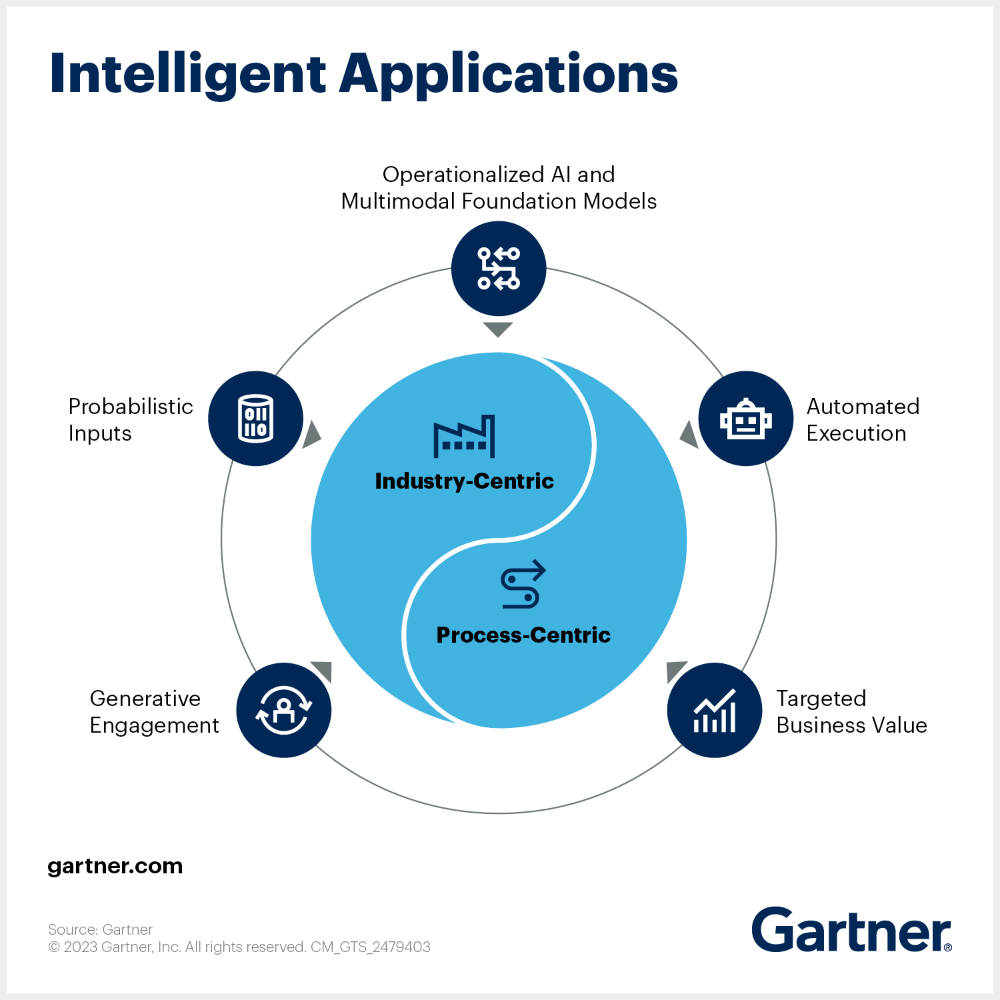

Общая картина
Новая эра приложений
Интеллектуальные приложения
Перейти

Intelligent Applications
Тренд 2024 года
Перейти

Проект МАДИ
Эта страница создана в качестве работы по предмету "Технологии разработки интернет-приложений"
Перейти